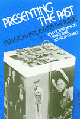

<body bgcolor="#FFFFFF" text="#000000" link="#0000FF" vlink="#CC0000" alink="#CC0000"><center><hr width="350" size="1" align="center" noshade>Lively and accessible essays examine the rapidly growing field called "public history"<hr width="350" size="1" align="center" noshade><p><a href="https://cdcshoppingcart.uchicago.edu/Cart/ChicagoBook.aspx?ISBN=9780877224068&&PRESS=temple" target="_top">Buy this book!</a> | <a href="https://cdcshoppingcart.uchicago.edu/Cart/Cart.aspx?PRESS=temple" target="_top">View Cart</a> | <a href="https://cdcshoppingcart.uchicago.edu/Cart/Cart.aspx?PRESS=temple" target="_top">Check Out</a></p><p></p></center><!--none//--><h1>Presenting the Past</h1>
<H2>Essays on History and the Public</H2>
<h3>edited by Susan Porter Benson, Stephen Brier and Roy Rosenzweig</h3>
<P>cloth 0-87722-406-4 $37.95, May 86, <FONT COLOR=#990033>Out of Print</FONT>
<br>paper 0-87722-413-7 $36.95, May 86, <FONT COLOR=#990033>Available</FONT>
<BR> 400 pp
6x9
18&nbsp;halftones
</P><BLOCKQUOTE><I>"A lively and challenging exploration of the messages and methods of popular history.... [The book] offers candor, analysts, and useful models for future efforts."</I>
<br>&#151<b><I>Journal of Social History</I></b><I></I></BLOCKQUOTE>
<p>In recent years, history has been increasingly popularized through television docudramas, history museums, paperback historical novels, grassroots community history projects, and other public representations of historical knowledge. This collection of lively and accessible essays is the first examination of the rapidly growing field called "public history." Based in part on articles written for the <I>Radical History Review</I>, these eighteen original essays take a sometimes irreverent look at how history is presented to the public in such diverse settings as children’s books, Colonial Williamsburg, and the Statue of Liberty,
<p><I>Presenting the Past</I> is organized into three areas which consider the role of mass media ("Packaging the Past"), the affects of applied history ("Professionalizing the Past") and the importance of grassroots efforts to shape historical consciousness ("Politicizing the Past"). The first section examines the large-scale production and dissemination of popular history by mass culture. The contributors criticize many of these Hollywood and Madison Avenue productions that promote historical amnesia or affirm dominant values and institutions.
<p>In "Professionalizing the Past," the authors show how non-university based professional historians have also affected popular historical consciousness through their work in museums, historic preservation, corporations, and government agencies. Finally, the book considers what has been labeled "people’s history"&#151oral history projects, slide shows, films, and local exhibits&#151and assesses its attempts to reach such diverse constituents as workers, ethnic groups, women, and gays.
<p>Of essential interest to students of history, <I>Presenting the Past</I> also explains to the general reader how Americans have come to view themselves, their ancestors, and their heritage through the influence of mass media, popular culture, and "public history."
<BR>&nbsp;<h2>Excerpt</h2><P>Excerpt available at <a href="http://www.temple.edu/tempress">www.temple.edu/tempress</a></p>
<BR>&nbsp;<h2>Reviews</h2>
<p><i>"...a valuable resource for people interested in deciphering the anti-historical tendencies of American culture. At a time when historical amnesia is rampant and the popular imagination daily infused with myths, </i>Presenting the Past<i> reminds us that the struggle for historical memory is an essential task of cultural and political life."</i>
<br>&#151<b><i>The Nation</i></b>
<BR>&nbsp;<H2>About the Author(s)</H2>
<P><b>Susan Porter Benson</b> is Associate Professor and Chair of History at Bristol Community College in Massachusetts.</P>
<P><b>Stephen Brier</b> is Director of the American Social History Project and Senior Research Scholar at the Graduate Center, City University of New York.</P>
<P><b>Roy Rosenzweig</b> is Associate Professor of History and Director of the Oral History Program at George Mason University in Virginia.</P>
<P>Contributors: Michael Frisch, Priscilla Murollo, Josh Brown, Ed Countryman, Eric Breitbart, Michael Wallace, Reginald Butler, Gertrude Fraser, Barbara Melosh, Christina Simmons, Daniel Walkowitz, Terrence O’Donnell, Linda Shopes, Jeremy Brecher, Lisa Duggan, Sonya Michel, Jeffrey C. Stewart, Fath Davis Ruffins, James Green, and the editors.</P>
<BR><H2>Subject Categories</H2>
<p><A HREF="/tempress/history.html" TARGET="_top">History</a>
</p>
<BR><h2 class="inpageheading">In the series</H2>
<P><I><a href="http://www.temple.edu/tempress/critical.html" onMouseOver="window.status='Click for other books in this series!'; return true;" onMouseOut="window.status=''; return true;" target="_top">Critical Perspectives on the Past</a></i>, edited by <a href="http://www.temple.edu/tempress/authors/benson_memoriam.html" target="_top">Susan Porter Benson</a>, Stephen Brier, and Roy Rosenzweig.
</p><p><i>Critical Perspectives on the Past</i>, edited by Susan Porter Benson, Stephen Brier, and Roy Rosenzweig, is concerned with the traditional and nontraditional ways in which historical ideas are formed. In its attentiveness to issues of race, class, and gender and to the role of human agency in shaping events, the series is as critical of traditional historical method as content. Emphasizing that history is itself an interpretation of material events, the series demonstrates that the historian's choices of subject, narrative technique, and documentation are politically as well as intellectually constructed.</p>
<p align="center"><a href="https://cdcshoppingcart.uchicago.edu/Cart/ChicagoBook.aspx?ISBN=9780877224068&&PRESS=temple" target="_top">Buy this book!</a> | <a href="https://cdcshoppingcart.uchicago.edu/Cart/Cart.aspx?PRESS=temple" target="_top">View Cart</a> | <a href="https://cdcshoppingcart.uchicago.edu/Cart/Cart.aspx?PRESS=temple" target="_top">Check Out</a></p><p><font face="Arial" size="1"><a href="copyright.html" onMouseOver="window.status='Web Copyright Policy';return true;" onMouseOut="window.status=''" title="Web Copyright Policy">&copy;</a> 2015 <a href="http://www.temple.edu" target="new" onMouseOver="window.status='Link to Temple University home page';return true;" onMouseOut="window.status=''" title="Link to Temple University home page">Temple University</a>. All Rights Reserved. http://www.temple.edu/tempress/titles/406_reg.html</font></p>